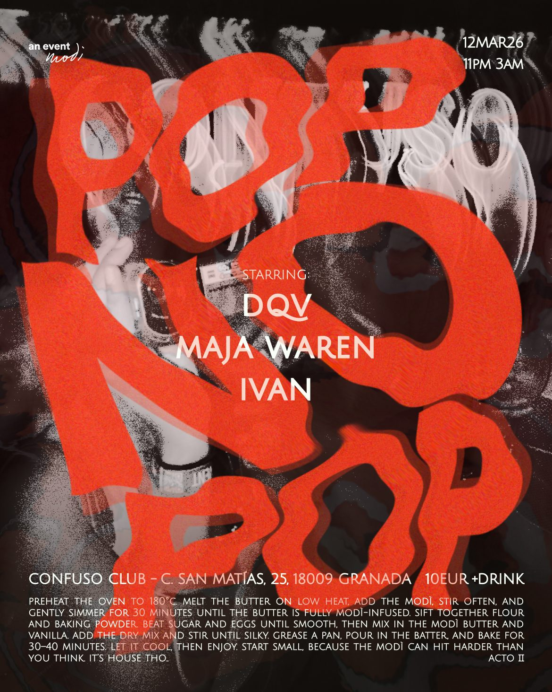
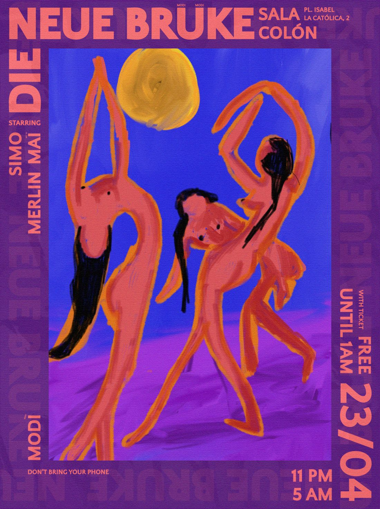
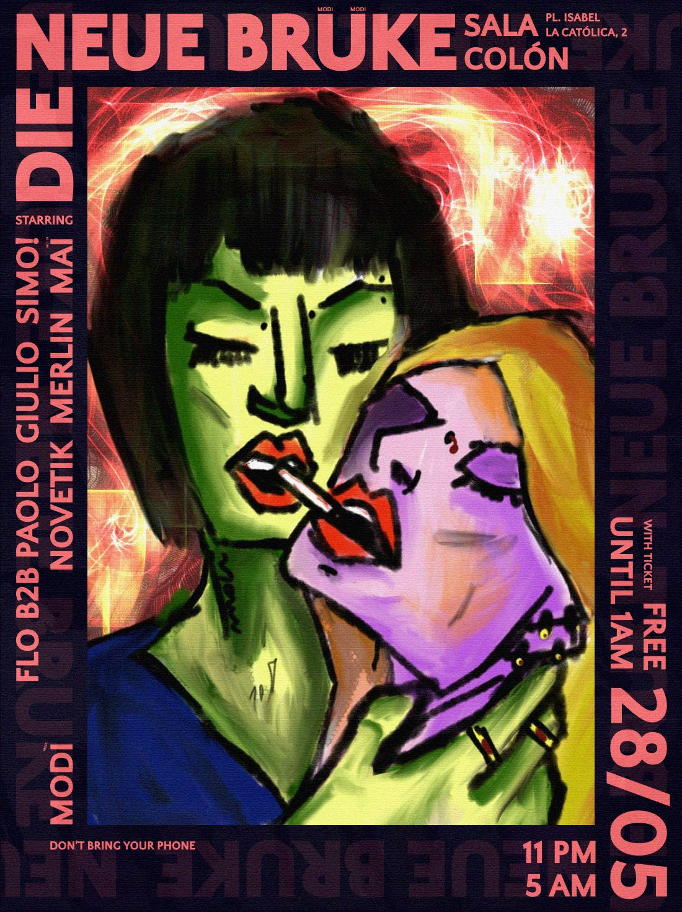
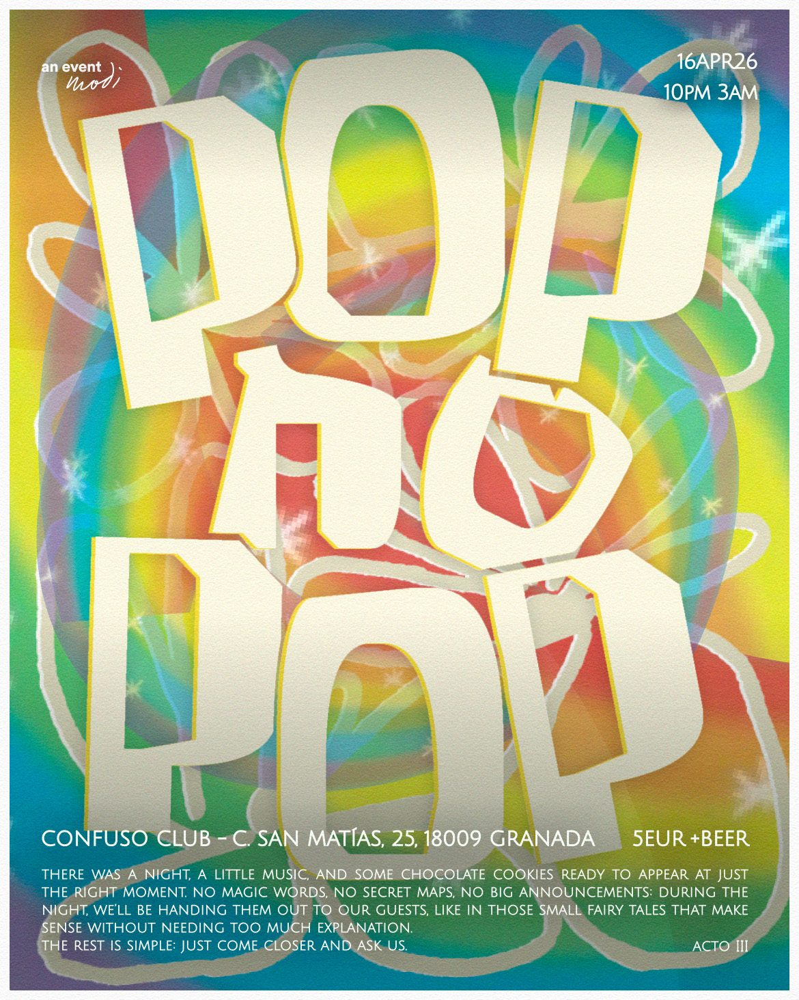

Colectivo modì2026
- Year
- 2026
- Creative Direction
- Simone Carducci
- Video & Editing
- Simone Carducci
- Format
- Filmed DJ sets, podcast, promo videos
- Where
- @colectivomodi
modì è un collettivo che tiene insieme musica, serate e video. Organizza DJ set, li filma e li pubblica come serie, così che una serata non finisca quando si spengono le luci. Accanto alle serate c'è un podcast, che dà voce alle persone che la scena la costruiscono davvero. Nel 2026, da gennaio ad agosto, ne ho curato la direzione creativa, con l'obiettivo di dare al collettivo un'immagine riconoscibile, dentro e fuori dalla pista.
Il mio lavoro partiva dall'identità: la strategia creativa, il tono della comunicazione, l'aspetto di ogni contenuto, dalla fotografia ai formati editoriali alle campagne digitali. Da lì seguivo tutto il flusso, dalla ricerca al concept fino alla consegna, coordinando collaboratori e fornitori quando serviva. Ho girato e montato io stesso i set in Final Cut Pro, con riprese multicamera sincronizzate sull'audio.
Le uscite sono tre serie. DJS Open raccoglie cinque set registrati e montati in 4K. DJS DnB segue la scena drum and bass in più serate. Il podcast è arrivato al dodicesimo episodio. Dietro ci sono sette progetti video e circa 750 GB di girato, archiviati e ordinati perché ogni montaggio si possa riaprire anche a distanza di mesi.
Una serata dura poche ore, il video resta. Con modì ho imparato a pensare la ripresa prima della serata: dove mettere le camere, come tenere pulito l'audio, come conservare il materiale perché niente vada perso.





